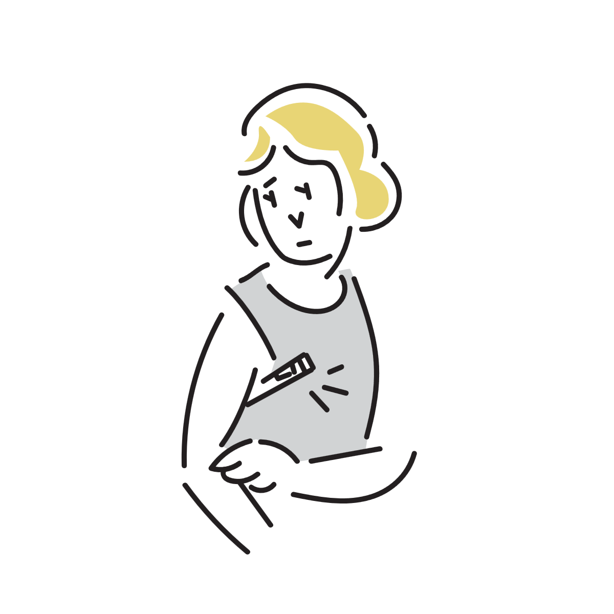
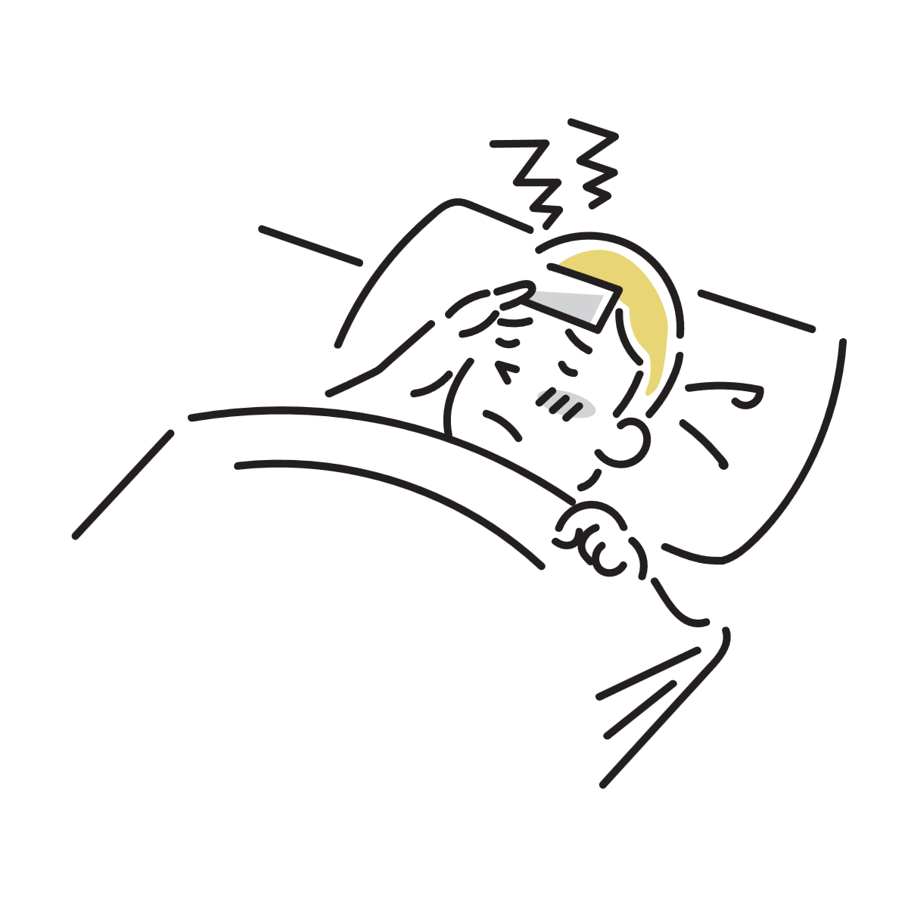
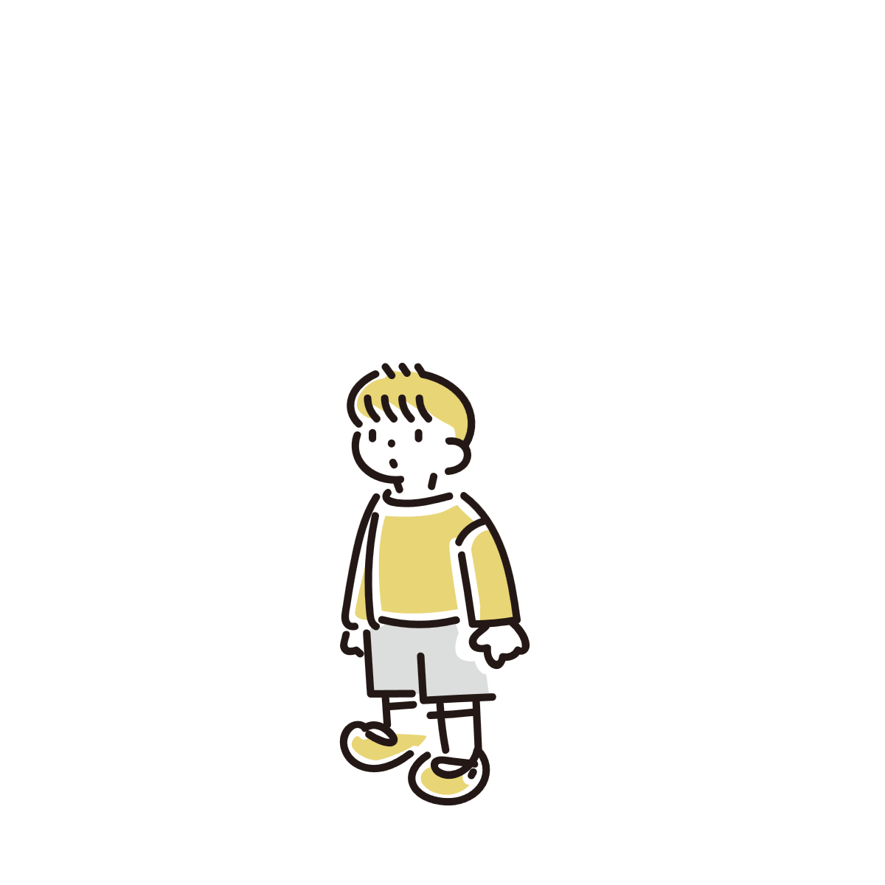

高熱が出ているのに辛く感じないのはなぜ？
38度台や39度近い熱があるのに、「意外と平気」「思ったほど辛くない」と感じることがあります。
周囲からは「そんな熱なのに元気なの？」と驚かれることもあり、自分でも不思議に感じる人は少なくありません。
実際には、熱の高さと「辛さの感じ方」は必ずしも完全には一致しません。
これは体温調節の仕組みや、脳が炎症をどう感じ取っているかなどが関係していると考えられています。

「熱」と「辛さ」は別の反応
発熱は、体が免疫反応を起こしているときに起こる体温上昇です。
一方で、「だるい」「苦しい」「動けない」といった感覚は、脳や神経が炎症反応をどう受け取っているかによって変わります。
そのため、体温が高くても辛さを強く感じない人もいれば、そこまで高熱でなくても強い倦怠感を感じる人もいます。
つまり、「熱が高い＝必ず非常に辛い」という単純な関係ではありません。
発熱中は「設定温度」が変わっている
発熱時には、脳の体温調節中枢が「いつもより高い体温」を正常だと判断する状態になります。
そのため、熱が上がっている途中では寒気を感じても、設定温度に達すると比較的落ち着いて感じることがあります。
つまり体としては、「異常な高温に苦しんでいる」というより、「今はこの温度が必要」と判断している状態に近いのです。
熱の数字と体感がズレることもある
例えば38.8度でも普通に会話できる人がいる一方で、37.5度程度でもかなり辛く感じる人もいます。
これは体質だけでなく、そのときの炎症の種類や疲労状態なども関係しています。
「高熱なのに元気」という現象自体は、必ずしも珍しいものではありません。

熱より「炎症物質」の影響が大きいこともある
発熱時の辛さには、炎症によって出る物質の影響も関係しています。
これらの物質は、だるさや眠気、食欲低下などを引き起こします。
しかし、その反応の強さには個人差があります。
そのため、同じくらいの熱でも、「かなり辛い人」と「そこまで辛くない人」が分かれることがあります。
「動けてしまう」こともある
高熱でも比較的動けると、「大したことない」と感じてしまうことがあります。
特に、発熱初期や一時的に症状が落ち着いているタイミングでは、体感が軽くなることがあります。
また、集中している間は不調を感じにくくなり、休んだ瞬間に一気に辛さを感じるケースもあります。
つまり、「辛く感じない＝体に負担がない」という意味ではありません。

子どもは特に「元気に見える」ことがある
子どもは高熱でも比較的動き回ることがあり、周囲を驚かせることがあります。
これは、症状の感じ方や行動パターンが大人と違うためです。
ただし、急に状態が変わることもあるため、「元気そうだから完全に安心」とは限りません。

「平気だから大丈夫」とは限らない
高熱なのに辛くないと、「このまま普通に動いても問題ないかも」と感じることがあります。
しかし、実際には体はかなりエネルギーを消耗しています。
発熱中は水分消費も増え、心拍数も上がりやすくなっています。
そのため、自覚症状が軽くても、休息や水分補給は重要です。
注意が必要なケース
高熱があっても比較的平気に感じること自体はありますが、強い症状が隠れている場合もあります。
特に、「呼吸が苦しい」「意識がぼんやりする」「水分が取れない」「強い頭痛や首の硬さがある」といった場合は注意が必要です。
また、熱が長期間続く場合や急激に悪化する場合も、医療機関への相談が勧められます。
発熱時に大切なこと
熱の数字だけでなく、「水分が取れているか」「呼吸は苦しくないか」「意識ははっきりしているか」といった全体の状態を見ることが重要です。
また、「元気だから無理して動く」のではなく、比較的楽なうちに休むことが回復につながる場合もあります。
発熱は体の防御反応の一部であり、「辛さの強さ」と完全に一致しないこともある、と考えるとイメージしやすくなります。
参考情報と注意点
発熱にはさまざまな原因があります。強い症状や長引く症状がある場合は医療機関への相談も検討してください。
関連アイテム
体温計や水分補給をしやすくするアイテムなどを、今後ここに追加する予定です。